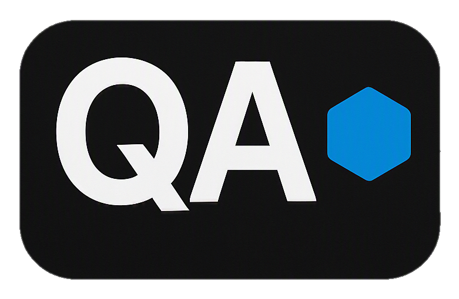

Filip JelínekAbout Me
From Application Engineer and Project Management to Professional Scuba Diving Instructor and finally into Software Quality Assurance.
I am an aspiring QA Engineer with a background in Application Engineering, quality-focused problem solving and project management. After several years working internationally as a Professional Scuba Diving Instructor and Dive Center Manager, I developed strong communication, analytical thinking and attention to detail in fast-paced environments.
I am now fully focused on Software Quality Assurance, building a professional portfolio that demonstrates manual testing, REST API testing, test automation and SQL. Every project follows industry-standard QA practices, including requirements analysis, test scenarios, test cases, execution reports, bug reports and traceability.
My goal is to contribute to a development team that values quality, continuous improvement and reliable software delivery.
My professional background combines Quality Engineering, Application Engineering, Project Management and international leadership.
As an Application Engineer, I performed software and hardware validation, functional testing, defect reporting, defect verification, technical documentation and close collaboration with development and engineering teams to improve product quality and reliability.
As a Project Manager, I coordinated engineering projects from planning through delivery, managed cross-functional communication, monitored risks, ensured compliance with quality standards and prepared technical documentation and project reports.
Leading a dive center and training divers from around the world further strengthened my leadership, communication, organization, risk management and decision-making skills in fast-paced international environments.
Today, I combine these experiences by developing professional Software Quality Assurance portfolio projects focused on Manual Testing, REST API Testing, Test Automation and SQL while continuously expanding my technical expertise.
Software Quality Assurance combines everything I enjoy about engineering and problem-solving.
I enjoy understanding how systems work, identifying issues before they reach users, and contributing to the delivery of reliable, high-quality software. For me, QA is about more than finding defects—it's about helping build better products.
Technologies, methodologies and tools used throughout my QA projects.
Requirements Analysis
Test Planning
Test Scenarios
Test Cases
Bug Reporting
Regression Testing
REST API
Postman
Newman
JSON Validation
HTTP Methods
Playwright (Learning)
TypeScript (Basic)
JavaScript (Basic)
Page Object Model
GitHub Actions (Learning)
Git
GitHub
VS Code
Jira
SQL
Docker
Application Engineer, Metrology, Quality Control,
Engineering Project Management, Cross-functional Team Coordination, Planning & Delivery.
Professional Diving Instructor, Dive Center Manager, International Team Leadership.
Portfolio Projects, API Testing, Manual Testing, Professional Documentation.
Junior QA Engineer → Test Automation Engineer → Advanced Quality Engineering.
Continue growing in Software Quality Assurance, advance into Test Automation, and pursue a career in Cybersecurity.
I'm actively building my QA portfolio while preparing for my first remote Junior QA Engineer opportunity.
Contact Me